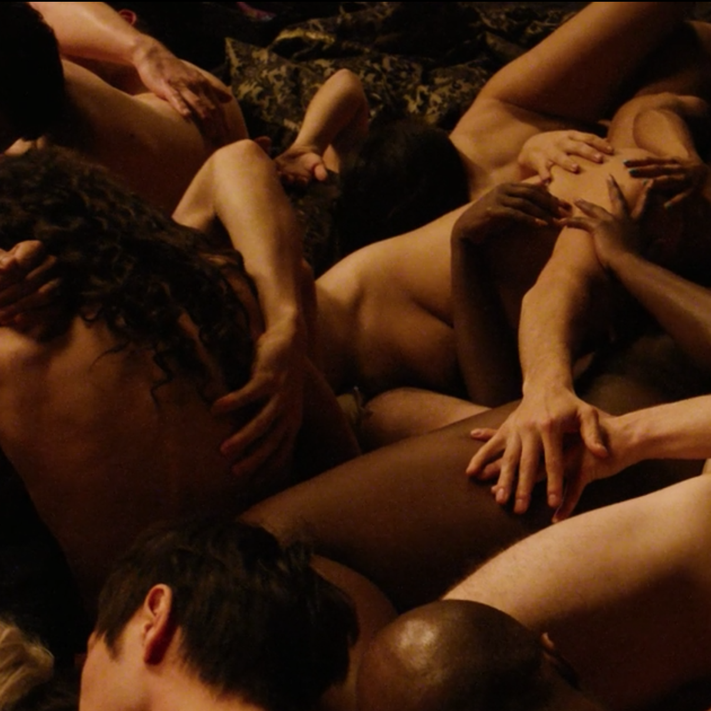

Hello I'm Jonathan,
--
I'm an Afro-European graphic designer contemplating the merge of human's digital and physical existences. Most of the time you'll find me buried inside Central Saint Martins desperately trying to avoid bad kerning practices.